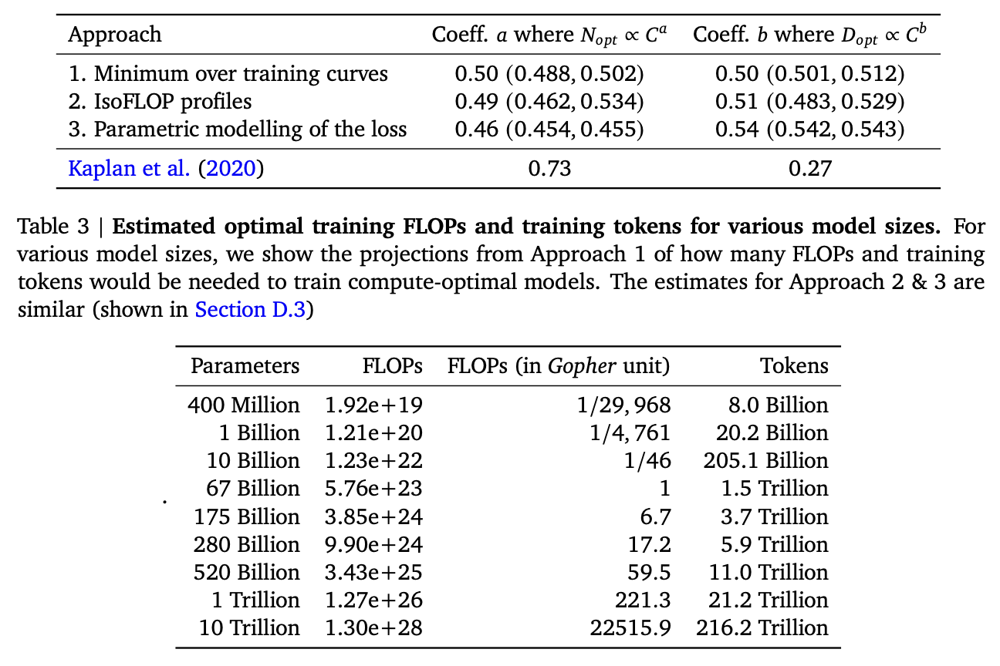
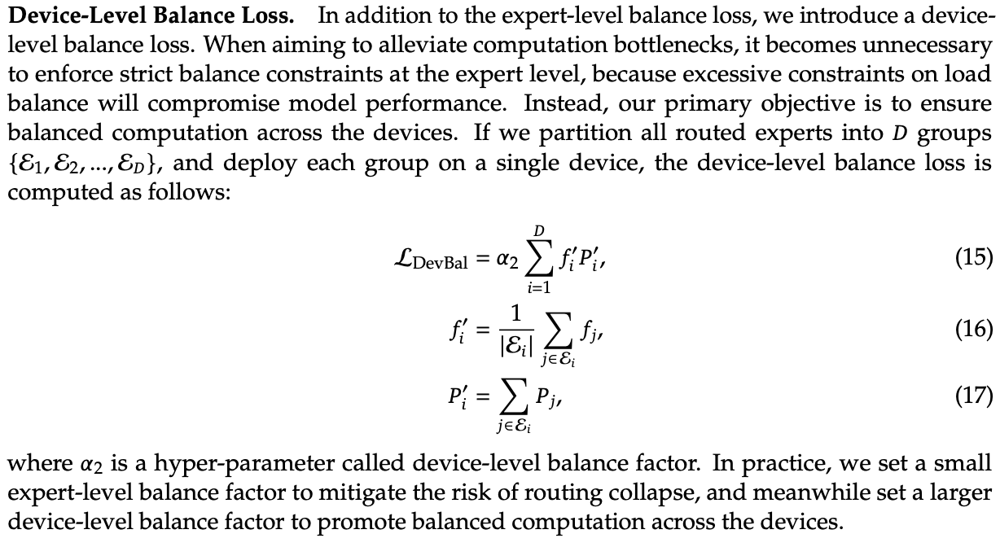
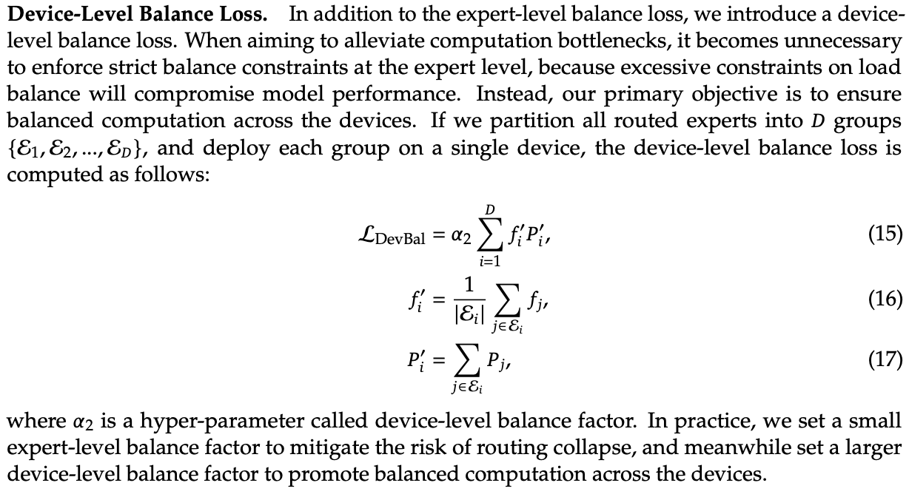
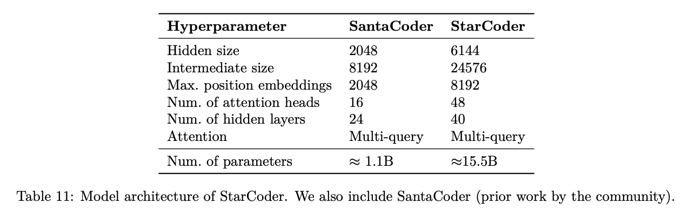
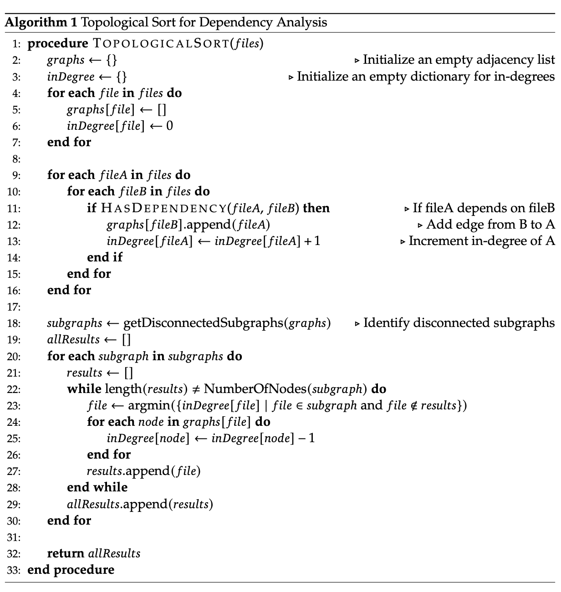
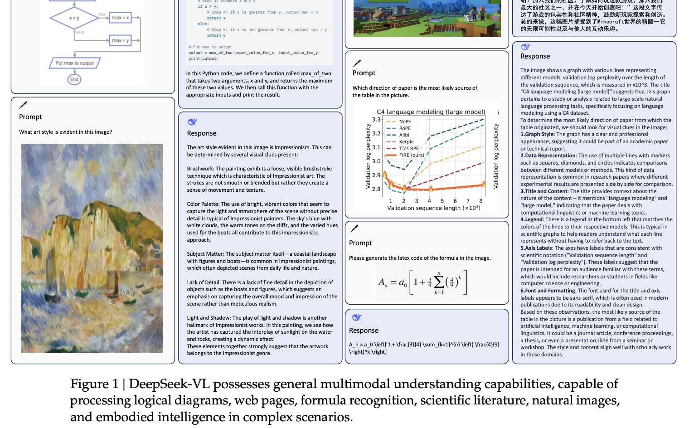
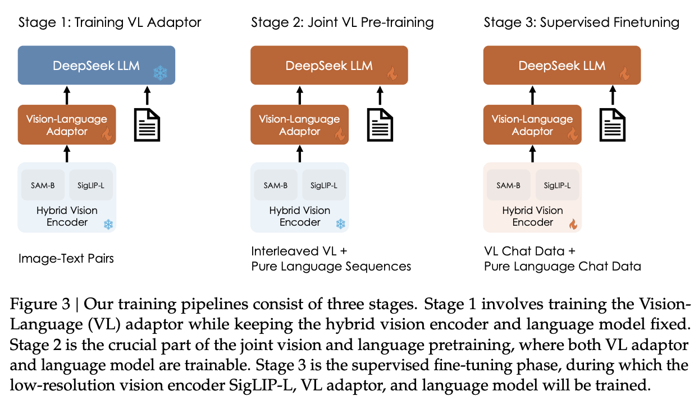

Deepseek
Table of Contents
- Understanding Modern LLMs via DeepSeek
- Intro
- DeepSeek-LLM
- DeepSeekMoE
- DeepSeek-Coder
- DeepSeek-VL
- DeepSeekMath
- DeepSeek-V2
- DeepSeek-Prover
- Overall Takeaways
- TODO Longterm
Understanding Modern LLMs via DeepSeek
Intro

DeepSeek's Corpus as a Survey of Language Modeling
Modern LLMs provide an interesting technical puzzle to the semi-informed machine learning enthusiast. By and large, they are a scaled-up version of the GPT architecture (2018), primarily driven by a technology called Transformers (2017). There's a lot of great work on understanding these two things in particular, which I've worked through in the past, but there is a slight snag here: these are (extremely useful!) resources for understanding 2017-2019 technology for which toy examples can be run on consumer hardware.
Putting this a bit more bluntly: there's a great deal of work out there which claims to lay out "how chatGPT works", where you work through some exercises and feel like you have a solid grasp of the fundamental technology at play. However, generally speaking these things will not help you understand how the actual thing works1. The toy examples are a vehicle for you to understand the thing that eventually became chatGPT, and in your head you just impute some vague idea that they made it huge and trained it on thousands of GPUs.
To really get how to go from this sort of technology to a bonafide frontier LLM, you run into two problems. First, a lot of stuff is done by closed AI labs like OpenAI, and important details about their process are deliberately obfuscated. Second, a lot of the work is not connected together: there's an absolute mountain of works about LLMs, and for the precocious reader it can be pretty difficult to assess which papers matter and which are junk or hype2.
In this vein, DeepSeek-AI's body of work stands out as extremely interesting. At the time of writing, it's seven papers long, and roughly covers their company's journey from roughly Llama 2 performance to roughly Llama 3 performance. They release models with every paper, and the overall decision-making is openly laid out to an almost shocking degree.
I think everybody with serious interest in large language models should read these papers, specifically. DeepSeek has some interesting ideas about architecture, but that's not why I think they're a worthwhile read; it's more that the papers all come from the same place, and build upon each other as they go. As a result they are a bit like an intense survey of state-of-the-art language modeling work in general – they discuss future plans, they have to run comparisons on what other teams are doing, and it necessarily covers everything you would need to know to understand the work powering these types of models.
This Document
The DeepSeek papers are a worthwhile read on their own, but I'm hoping this document can serve as a single companion reader for the list of works. By virtue of all their papers needing to be standalone, they need to cover a lot of the same ground, which you wouldn't need if you happened to be binging their entire catalogue in a short time period3. Additionally, academic works will typically introduce an idea and then assume the reader has appropriate context, and I'm hoping to provide some explanations for "standard" language model stuff that gets mentioned in these works4.
Simply put, it's a lot of notes. You can call it a personal exercise to learn lots of things about language models beyond Vaswani et al 2017. I'm imagining this will be somewhat of a living document, and I may add to it as I learn more things / as DeepSeek continues to release works.
The intended audience of this post, ideally, is someone at the level of having gone through the Karpathy GPT reproduction videos and understood them well. I'm going to assume the reader knows what transformers are, what multi-headed attention is, etc, but that they probably don't know stuff like scaling laws or grouped query attention. I'm going to go into a lot of detail, and I simply have no illusions that my would-be attempt at explaining from Level 0 would be better than Karpathy's excellent work on this topic already.
I also am not intending this to replace reading the papers. I will not be including all of the information in all of the papers, and won't be mentioning stuff like number of epochs unless that's a really important detail to understand the big picture. I hope that you could read the companion here and understand the papers well as a result, but if there's an important detail you think I missed or didn't understand properly please tell me (ideally via twitter).
Briefly as acknowledgements, I leaned on some people to help me understand things here:
DeepSeek-LLM
This paper can be found here. It came out January 5th 2024.
Generally speaking, this paper does two things:
- It roughly reproduces Llama 2, but with data more oriented towards Chinese language performance
- It examines scaling laws, in order to demonstrate that they can predict the expected performance of their models and select good hyperparameters to land at that performance
Point 1 here is a relatively heavy one: the architecture differs extremely minimally from Llama 2, and it does generally worse on English language benchmarks than Llama 2 due to being focused on Chinese. As far as their reported results go, they are not really anything special: the purpose of this paper is to create a foundation for the rest of the DeepSeek work, where their improvements will be noticably different from the standard Llama 2 stuff. Consider it like their starting line: a declaration that they can reproduce llama 2.
Aside A: Understanding Llama 2
Meta's Llama 2 is a very important paper for language models: they were the first open weights models which were highly performant even at small sizes, and the largest model was much better than anything open-source before it. As a result, it has held extreme influence over the open source community since its release, with most released models usually hovering around the same parameter counts to facilitate comparisons with Meta's results.
The Llama 2 paper itself is quite detailed, so lots of information is available on how exactly it works. There's a few things about it which warrant some quick explanation. At a glance, Llama 2 has the following properties:
- Model sizes of 7B, 13B, 34B, and 70B parameters
- Trained first via pretraining a base model, followed by supervised finetuning to get an instruction tuned model, followed by Reinforcement Learning from Human Feedback to get a more helpful/safe model
- Each trained on 2 Trillion tokens, all with a context length of 4096 tokens
- Uses a Byte Pair Encoding (BPE) Tokenizer with individual numbers split up, a total vocabulary size of 32k tokens
- Uses Rotary Positional Encodings (RoPE), RMSNorm for normalization, and SwiGLU activation
- Uses Grouped-Query Attention (GQA) for efficiency in the 34B and 70B parameter models
Some of these warrant somewhat more attention, so I'll briefly cover them here. This document is not a super deep dive on Llama 2 (This is just necessary context), so I'll be giving a high-level view which is necessary for what DeepSeek is attempting to reproduce / what will be improved upon in later work.
Llama 2 Training Loop
Llama 2 is trained in three phases:
- Pretraining Phase (Creates Base Model)
- Supervised Finetuning Phase (Creates Chat Model)
- Reinforcement Learning from Human Feedback Phase (Creates Aligned Model)
This loop was originally proposed in the InstructGPT paper, back in 2022.
The pretraining phase is where they do most of the heavy lifting, and it's the step most tutorials teach you about when you're learning about language models in a pedagogical setting. The purpose of this phase is to get the model to learn how to predict the next token, given some context of previous tokens. If you train a really big model to do this on a lot of data, it becomes very good at picking plausible continuations to text: you can feed the output back into the context and continue generating tokens based on the previously generated token, and that's called autoregression.
At this point, the model is not that useful. What is done after this phase is what turns this token prediction model into a chat model: supervised fine tuning (SFT). SFT is a step where you fine-tune the base model on a bunch of data which looks vaguely like this:
### PROMPT
What is the capital of Mali?
### ANSWER
The capital of Mali is Bamako.
It is a lot harder to collect a lot of data in this particular format, so this step usually is a lot smaller (~1% of the size). However, this is what turns the model into something ostensibly useful: it's learning to predict the next token conditional on that token being some sort of reply to some sort of question.
The last step of this process is reinforcement learning from human feedback (RLHF). This is an iterative step which will attempt to steer the model's responses to be more likely to result in positive feedback from a human rater. Llama 2 uses two strategies for this: Proximal Policy Optimization (PPO) and Rejection Sampling. We will explore these in more detail once we get to DeepSeekMath, but for now think of these as Reinforcement Learning (RL) techniques in order to massage the responses to be a little safer and friendlier (this is the step which produces responses like "sorry, as an AI language model I cannot assist in the spread of misinformation").
Llama 2 Architecture Decisions
Byte-Level Byte-Pair Encoding (BPE)
The byte pair encoding tokenizer used for Llama 2 is fairly standard for language models, and has been used for a fairly long time. Some things to notice relative to DeepSeek-LLM is that they used a vocabulary of 32k, which is a fair bit less than DeepSeek's 102k vocabulary size. The big reason for the difference here is that Llama 2 is made specifically with English in mind, compared to DeepSeek's focus on being performant in both English and Chinese. Llama 2's dataset is comprised of 89.7% English, roughly 8% code, and just 0.13% Chinese, so it's important to note many architecture choices are directly made with the intended language of use in mind.
Rotary Positional Encoding (RoPE)

RoPE was a positional encoding method which came from the RoFormer paper back in November 2023. We will talk about this paper in more detail when we get to DeepSeek-V2, because the strategy of using strong relative positional embeddings is what will enable us to eventually get nice long context windows rather than these tiny fixed context windows we are currently using.
Probably the best way to get a grasp of RoPE is the Eleuther AI blogpost about it. The idea behind RoPE is very clever:
- You have two items q,k at two positions m,n.
- You want a function where the dot product is the same provided q and k are the same, and the distance between m and n are the same
- We can represent the tokens as complex numbers, and represent their positions as rotations we apply to them
- if we shift q and k the same amount in positions, their relative rotations will be the same, so the dot product will also be the same
- if we put this in the attention step rather than the embedding step, then we can get relative positional encodings for our tokens using this dot product, which is the same relative to other tokens when shifted over.
For now this is enough detail, since DeepSeek-LLM is going to use this exactly the same as Llama 2. The important things to know are: it can handle an indefinite number of positions, it works well, and it's uses the rotation of complex numbers in q and k. Later on in the DeepSeek-V2 sections they will make some changes that impact how this part works, and so in that section we will cover this in more detail.
SwiGLU Activation
SwiGLU is from a very short 5 page paper GLU Variants Improve Transformer6. Gated linear units are a layer where you component-wise multiply two linear transformations of the input, where one is passed through an activation function and the other isn't. The original GLU uses a sigmoid acivation, and SwiGLU uses this Swish activation function.
This replaces the ReLU activation function in normal transformers.
RMSNorm
The traditional thing to put in transformers is LayerNorm. RMSNorm is a computationally simpler variant compared to LayerNorm:

The difference here is pretty subtle: if your mean is 0 then these two are exactly equal. You can think of RMSNorm being the claim that re-centering the data at 0 in LayerNorm doesn't do anything important, so it's a little more efficient.
Group Query Attention (GQA)
We will talk about Group Query Attention in a bit more detail when we get to DeepSeek-V2. The basic idea is that you split attention heads into "KV heads" and "query heads", and make the former fewer in number than the latter. This is done as a tradeoff: it's nicer if we can use a separate KV head for each query head, but you save a lot of memory bandwidth using Multi-Query attention (where you only use one shared KV head). Bunching up the queries and using several KV heads is sort of like the halfway between memory efficiency and performance7.
DeepSeek-LLM Pretraining Phase
Bringing it back to DeepSeek, let's start by understanding the pretraining data, and how they collected it.
DeepSeek's data collection phase at this stage is three phases:
- Deduplication: Reduce Redundant Data
- Filtering: Maximize Document Quality
- Remixing: "Increase presence of underrepresented domains"
Deduplication is done pretty aggressively here: common crawl is organized into "dumps" which happen at regular intervals, and deduplicating within these dumps is very much not enough. Because documents are often identical in multiple dumps, their strategy of deduplicating across dumps filters out tons of redundant data.
Filtering is done with a relatively vague "linguistic and semantic evaluations", remixing is done to address class imbalance, although both are somewhat unclear from the text (maybe something to look into more deeply later?)
The same as Llama 2, they train on 2 Trillion tokens collected using the above process. They train 2 models this way: one with 7B params and one with 67B params (roughly, the smallest and the largest llama 2 models).
Generally speaking, DeepSeek-LLM follows Llama 2 very closely: RMSNorm, SwiGLU, RoPE, etc. The 67B model uses GQA, the 7B model does not. The biggest difference in the architecture itself is in the tokenizer: as mentioned a bit ago, it uses a 102k tokenizer, most likely to enable its performance in both English and Chinese.
To make a long story short, they pretrain this model on this dataset and get good results.
There are some small differences: Llama 2 7b has 32 layers compared to DeepSeek-LLM's 30 layers, and Llama 2 70B has 80 layers to DeepSeek's 95 layers. They claim this is for model partitioning purposes, but they make an effort to keep the total parameter count roughly the same to enable a fair comparison.
The learning rate schedule is also different from Llama 2 here. Whereas Llama 2 uses the typical cosine scheduler, DeepSeek-LLM uses a multi-step scheduler instead. They do an 80%:10%:10% three-stage schedule, where the decreases 31.6% and 10% respectively.
They don't really get any sort of improved performance with this, but the nicer thing about multi-step schedulers is that you always easily know the learning rate at each checkpoint. With a cosine scheduler, you need to keep track of the exact current time to get the value of the cosine curve at any particular checkpoint, so the multi-step scheduler being good enough is a handy thing for easier checkpoint use.
SFT and Human Preference Alignment
Now that we have a performant base model to work with, we need to turn it into a chat model. They do this with two stages: Supervised Fine Tuning (SFT) and Direct Preference Optimization (DPO).
SFT
DeepSeek-LLM collects a dataset of ~1.5 million instruction data examples in both English and Chinese, most of which are for making the model more helpful (good at code, math, etc). There's an interesting note here about multiple choice data during this phase: they show an experiment where they added 20 million Chinese multiple choice questions in the SFT phase, which boosts the multiple choice performance a lot. This improvement only helps on multiple choice benchmarks; this does not help general capabilities that are not in MC format. Their given reason is that these questions don't only test the model's knowledge, "but also to understand what the option refers to."
They report this result and then state: "Therefore, we have chosen to exclude MC data from both the pre-training and fine-tuning stages, as including it would result in overfitting to benchmarks and would not contribute to achieving true intelligence in the model."
The above might be some sort of hint to evaluate why certain models seem to overperform on benchmarks and other seem to punch way above their weight relative to reported results – there's all sorts of stuff which could potentially constitute implicitly overfitting to benchmarks in this way, and it's worth keeping in mind when evaluating new models.
There's another interesting note here about including instruction-tuning data in the pretraining set, in order to cook up the base model's performance on benchmarks prior to SFT and DPO. I'll present the below without comment, since it will come in handy later.
Alignment
Deviating from Llama 2 a bit here, DeepSeek-LLM performs the human preference alignment step with a newer technique called Direct Preference Optimization. We will be diving into this in a bit more detail once we get to DeepSeekMath, but the gist of it is that instead of training a reward model with preference data and then using reinforcement learning to affect the model's outputs, it implicitly optimizes the same objective without reinforcement learning, making it simpler to implement.
"We found out that DPO can strengthen the model’s open-ended generation skill, while engendering little difference in performance among standard benchmarks."
Aside B: Understanding Scaling Laws
Back in the stone age of 2022, we started to see some extremely large dense models pop up: Megatron-Turing NLG was 530 billion parameters, which was absolutely massive for a dense model in 2022. The early part of this era was characterized by the belief that we just needed to make the models bigger and bigger.
That's still sort of true, but a lot changed after Chinchilla was released: a DeepMind Paper which found that "compute-optimal training" would scale up model size and training tokens equally (i.e. that 2x data should roughly equal 2x model size). This was a big shift in scaling laws: before then everybody was mostly following the results from Scaling Laws for Neural Language Models from 2020, which showed that the model size was much more important (due to being more sample efficient, and needing fewer steps to learn).
The big result they got was demonstrating that all of these gigantic models were extremely undertrained. Megatron-Turing NLG was trained on a mere 339 billion tokens, which seems almost laughably low for a 530B dense model today8. Their Chinchilla model got similar performance to these huge, 500B+ parameter models with only 70B parameters, by using 1.4 Trillion tokens instead.

They figured this out by asking: "Given a fixed compute budget, how should you trade off model size and training tokens?" This can be framed like an optimization problem: with a loss \(L\) and compute budget \(C\) which is a function of the training tokens \(N\) and the dataset \(D\), we want to find the argmin \(L(N, D)\) such that \(D\) and \(N\) equal \(C\). If this is nicely described by some sort of power law, we can use this relationship to predict the loss of the model if we scaled up.
They try three approaches which all turn out roughly equivalent:
- Fix the model size, vary the number of tokens, and try to identify the optimal compute size to get the lowest loss for each number of training tokens
- Vary the model size for a fixed set of training Floating Point Operation (FLOP) count, plot IsoFLOPs curve to estimate optimal model size with lowest loss for each compute budget.
- They fit a parametric loss function to model all the losses from the experiments in 1 and 2
They get a very different result from the original scaling laws paper. This could be for a variety of reasons: that paper used much smaller models, didn't adjust the fixed learning rate or number of tokens for each model, and so on.

This represented a huge shift in how these models were trained, where the metagame started to reorient towards large datasets and modestly large models. Llama 3 400B is the conceptually closest thing to what Megatron-Turing NLG was back in 2022, but reaches GPT-4 performance after being trained on 15 Trillion tokens9.
Scaling laws are a whole thing. There's more work beyond what I've listed above, and there's much discussion about whether these will eventually level off or if we can just scale our way to artificial general intelligence. That's outside the scope of this article: the important thing here is that we can fairly accurately predict how well our model will perform given data and a compute budget, with some smaller scale experiments.
DeepSeek Scaling Laws
Back to DeepSeek, it's not clear if it would be better to follow the OpenAI scaling laws or the Chinchilla scaling laws. The results seem sort of all over the place, so it ends up being kind of important to run the experiments themselves instead of wasting millions of dollars on a suboptimal training run.
With respect to scaling they make three contributions in this paper:
- They show a scaling law for optimal batch size and learning rate
- They change model size parameter \(N\) from Chinchilla to "non-embedding FLOPs per token" \(M\), which is a little more accurate for calculating scaling laws (this will become more obvious when we cover Mixture of Experts)
- They show that the scaling laws you get from these experiments are different depending on the dataset quality, and as your dataset gets better you should allocate more budget to model size.
Scaling Law for Hyperparameters
They run some simple experiments to find optimal parameters based on fixed compute budgets, the figures tell the story well:
Cool implication: The optimal hyperparameters fall within a broad band, which means that the underlying system here is pretty stable and that tiny parameter changes shouldn't have huge impacts10. The results are pretty intuitive: with more compute power you'll want a larger batch size and a lower learning rate. Their parameters for both models are picked according to these laws.
Replacing N with M
In this section they replace "model parameters" with an estimate more in line with the transformer architecture, ignoring the vocabulary computation but accounting for the attention operation. They show a table where this more granular value often varies widely from the simpler approximations used in other works.
Aside from that, they fit the IsoFLOP curves just like Chinchilla and get results pretty close to theirs:
Scaling Laws Depend on Data
Making their own dataset and ostensibly improving it over time let them do a cool experiment where they were able to show that dataset quality affects the scaling laws that you get from the above process. This seems very intuitive to me, but can partially explain why a lot of the research seems all over the place as far as specific values go.

It squares away the huge gap between OpenAI's scaling laws work and Chinchilla: OpenWebText2 got crazy scaling laws reflective of it's high quality and small size, whereas Chinchilla got mostly evenhanded ones based on it's substantially larger size (which comes attached with more difficult filtration). Their own data shows that over time the optimal scaling of the model is higher and higher the better the collected data gets, supporting the above conclusions.
Takeaways, Conclusions
Generally speaking, DeepSeek-LLM follows Llama 2 very closely, and their result is not terribly unexpected given that they have an open source model of what to do.
But this is just a baseline: from the text, "Our study aims to lay the groundwork for future scaling of open-source LLMs". They now have a good way to pick hyperparameters, a good way to predict model performance, and a demonstrated ability to build performant LLMs. From this point forwards all the papers will focus in on little areas an make improvements to them.
Their stated future work from this paper are:
- Code intelligence report (high quality data for pre-training) (DeepSeekCoder)
- Mixture-of-Experts (MoE) (Sparse model with dense model performance) (DeepSeekMoE)
- Bigger / better dataset for DeepSeek LLM's second version (DeepSeek-V2)
- Alignment work w/ reinforcement learning to boost complex reasoning ability (DeepSeekMath)
Let's get into some of these.
DeepSeekMoE
This paper can be found here. It was released January 11, 2024.
Mixture of Experts (MoE) is a type of model which will directly activate different weights, or "experts", depending on the input. This lets you have a sparsely activated model which lets you scale up the parameter count extremely high, since only a comparatively small number of parameters are active on every forward and backward pass. The Mixture-of-Experts idea has been around since the 90s11, but Noam Shazeer has a lot of work bringing this over to language models, e.g. scaling a model to over a trillion parameters back in 2022.
It has been known that GPT-4 is an MoE model, likely with about 1.8T total parameters. So, it makes sense for DeepSeek to want to learn how to use them. However, it's a little tricky: the Chinchilla paper has a line where it cites Unified Scaling Laws for Routed Language Models and says "for very large models the computational benefits of routed models seems to diminish".
DeepSeek does two big things in this paper:
- They introduce "Fine-Grained Expert Segmentation": instead of using a few big experts, use a ton of extremely small ones.
- Hopefully this will make it so that each expert has decorrelated expertise, and they don't activate for "common knowledge". Because you still need common knowledge, they introduce "generalist experts", which are shared experts which are always enabled to capture this.
Their goal here is to address two annoyances about Mixture of Experts: knowledge hybridity (each expert has to learn lots of different things), and knowledge redundancy (each expert probably knows stuff the other experts know). We are going to read some MoE papers to understand what they're doing here.
Aside A: Mixture of Experts for Language Models
The high level idea behind MoE is that you replace the feedforward network at the end of the attention block with a Mixture of Experts layer, which is basically just like a regular feedforward network but there's a bunch of them, and you only route the input to a few of them on every forward pass. If you imagine each FFN is the same size as the old FFN, and you only pick one of them, then it's simple to see that on each forward and backward pass you basically have something the exact same size as the original network – it's a way to scale up parameters without needing every parameter all the time.
Formally you can see it below:
where N is the total number of experts, FFNi is the ith expert, gi,t is the gate value for the ith expert (i.e. if we turn it on or off)), si,t is token-to-expert affinity (i.e how hard we turn it on), all of the above with layernorm omitted for brevity.
The Mixture of Experts Layer
Using this in Language models is mostly downstream of a 2017 paper called Outrageously Large Neural Networks: The Sparsely-Gated Mixture-of-Experts Layer, which is part of Noam Shazeer's extensive body of work on language modeling (and MoE in particular)13.
This was done on stacked LSTM layers, by virtue of it being performed in January 2017.
The output of this layer is \(\sum^{n}_{i=1}G(x)_iE_i(x)\), where G(x) is the weight of each expert's "opinion" (and all the G(x)s sum to 1). To save computation, you squash this to 0 for all except the top couple of experts, that way you don't need to compute the expert's output just for it to be multiplied by a very small number.
The original way to do gating was to just have a trainable weight matrix \(W_g\) which is multiplied by the input and then softmaxed to sum to 1. This paper's version adds a few extra features: adding a little bit of noise, only keeping the top k, and then softmaxing that output. This introduces a second matrix \(W_{noise}\) which controls the amount of noise to be added.
This can be trained just using normal backpropagation – the contribution and gradients of each non-top-k expert is set to 0, which means both the forward and backward passes only affect the sparsely selected experts.
GShard
The main point of comparison for DeepSeekMoE is GShard: Scaling Giant Models with Conditional Computation and Automatic Sharding, also featuring Shazeer's name.
GShard is work which basically does 2 things:
- It implements a big transformer decoder block which implements a Mixture of Experts Layer
- Enable you to put each expert on it's own GPU, and allow routing to move across GPUs to the appropriate expert
This lets you scale up the effective width of the models substantially. For example, Mixtral 8x22B is a strong open Mixture-of-Experts model. You can imagine this as 8 copies of the same stack of decoder blocks, but where all the FFNs are a little different. In this case, your router in the mixture of experts layer can point to an expert which is on a different GPU – GShard implements the ability to All-to-All Dispatch (i.e. send something to an expert on another GPU) and All-to-All Combine (i.e. get the outputs of all experts at the end of the FFN step of each decoder block).
Yannic Kilcher has a video on the GShard paper which goes into somewhat more detail here, but the general idea is that GShard lets you scale using Mixture of Experts more easily when you have a very large number of devices, by allowing those devices to communicate with each other and assigning them each different tasks ("sharding" the model).
Expert Segmentation + Shared Experts = DeepSeekMoE
Ideally, we want each expert to be responsible for only an extremely narrow band of knowledge, especially since it's only inferring upon a single token. It is a waste of resources to train multiple FFNs which all have to learn the same things for the model to be performant, which could defeat the purpose of using MoE to scale parameters up.
Expert Segmentation
The very simple thing DeepSeekMoE does to get around this is by making all of the experts really, really small. If we want \(M\) experts, we just divide the hidden dimension of the FFN by \(m\), such that all the experts together are the same size as the original FFN.
The formulation is the exact same as the previous MoE definition, but substitute \(mN\) for \(N\) and \(mK\) for \(K\). The logic here makes sense: it's N choose K combinations, and increasing the granularity of the experts increases both N and K here (more experts + selecting more experts for the same computational cost).
Shared Experts
Okay, but what about stuff we always want to be able to do? What if "all the experts need to know the same stuff" is a strength rather than a weakness, and the larger expert size imbues each expert with some "common knowledge"?
DeepSeekMoE's solution here is to make those components explicit – have some number of experts which are always on and always selected, whose job it is to capture those things which ostensibly all experts should know. The complete formulation is shown below:
Overall this all seems fairly well-motivated, even if the extreme expert segmentation has been somewhat of a barrier to making DeepSeek's MoE models easy to adapt for stuff like llama.cpp.
Custom Losses / Why Hasn't This Been Done
The problem with many very small, numerous experts is that this reduces the margin of error for the router, and also makes parallelization kind of tricky. One possible mode of failure is similar to mode collapse, where the router learns that the top K experts are the most performant, always selects them, and then you effectively just have a normal FFN again, with a bunch of useless parameters that never train and are never used. Another possible mode of failure is if all the most common experts happen to be on the same GPU, suddenly giving you a big bottleneck.
To try and address this, DeepSeekMoE introduces two additional auxiliary loss terms: Expert-Level Balance Loss which penalizes the model for not evenly selecting the experts, and Device-Level Balance Loss which splits up the experts into partitions and then penalizes the model for selecting a lot of experts from the same partition.
 

Including this sort of thing in the loss terms is a bit strange, and it probably does not work without them, which probably explains why nobody other than DeepSeek really does this. [TODO: Run some toy experiments yourself here].
"DeepSeekMoE Aligns Closely with the upper bound of MoE Models"
Comparing Mixture of Experts models with non-MoE models is going to be pretty tricky, both here and moving forwards into future works. It doesn't feel quite right to compare it to a dense model with the same number of parameters (where it activates so many fewer parameters each forward pass), and it also doesn't feel quite right to compare it to a dense model with the same number of active parameters (where it literally just has fewer parameters than the MoE model).
In any case, the absolute ceiling here would be comparing MoE with a dense model with the same number of total parameters, but all activated. It seems directly not realistically possible for turning off a bunch of the parameters to be better than leaving them on, assuming an unlimited compute budget. They run some experiments to show that the performance they get is comparable with this upper bound, despite using way less computation / energy / etc.
I do not think this observation holds as they continue onwards (I don't think the conclusion "MoE is basically like training a dense model of the same size" is correct or fair), but a healthy takeaway from this is that MoE models are very performant for their activated size. More concretely: they go on to train DeepSeekMoE, a 145B parameter model, and show that it's performance is roughly equivalent to DeepSeek-LLM 67B. This model has more parameters than the latter model, but it's activated size is much smaller.
Learnings from Experiments / Ablations
You can read through the paper for more concrete examples, but I'll rapid-fire some of the learnings here
Lower Redundancy among Routed Experts - if you disable the top N of K experts, DeepSeekMoE gets hurt way worse than GShard, suggesting GShard has less concrete expert specialization.
This does not work without the shared experts - if you add another small routed expert instead of the shared one, this gets way worse.
More expert segmentation = better performance for fewer parameters - Larger experts (as in GShard) accumulate knowledge much more slowly due to redundancy between experts, smaller experts reach equivalent performance even with fewer parameters.
Conclusion
They use the above learnings to train and release DeepSeekMoE 145B, which does about as well as DeepSeek-LLM 67B. They release a chat model that they train the same as in previous papers. They even include some experiments where they halve the number of experts and still get similar performance, suggesting the sparsity could even be pushed even further.
Again, the comparison to dense models is a bit unclear – there are two primary takeaways:
- Mixture of Experts is a way to dramatically reduce FLOPs per Token and not parameter count, which is why their scaling laws from the previous papers were about FLOPs per Token and not parameter count.
- DeepSeek sees good success with much smaller / numerous routed experts + shared experts, which is unusual relative to most MoE work which does top-1 or top-2 routing.
DeepSeek-Coder
This paper can be found here. This was released on Jan 26 2024.
The DeepSeek-Coder paper can be primarily viewed as a data quality exercise, as well as a capabilities project. DeepSeek has shown up to now that they can train large language models that are pretty good – can they make one that does a particular thing better? How would they collect data for that? How is that different from a model which is just good at replying to questions in natural language?
To look into this, they collect a bunch of data from github, go through an extensive data quality filtering process, and arrive at a dataset of 2 trillion tokens. They train this almost exactly the same way as they train DeepSeek-LLM, but focused on code generation capabilities rather than other benchmarks. They produce a model which at the time was the state-of-the-art open weights coding model, outperforming 3.5-turbo. They also produce a new benchmark of LeetCode contest problems, which they present alongside some of the more normal benchmarks you see in code generation work.
Aside A: Code Generation LLMs
StarCoder: may the source be with you!
StarCoder is a crazy project from December 2023 from an open source community called BigCode. It's a fairly hefty paper with a multitude of authors from all over the place. The fundamental idea here is that they train a 15.5B parameter base model with 8k context window on The Stack, a 1 trillion token dataset which is assembled by filtering code out based on provided licenses + with the ability to opt-out of inclusion. This is further finetuned on 35B python tokens to create StarCoder.
There's a lot of really nice stuff in here: sections on aggressively filtering out personally identifiable information, ways to convert jupyter notebooks into scripts, even a section on manual visual inspection performed by volunteer human annotators. The bulk of this paper, like DeepSeek-Coder, is about this painstaking data collection process.
Architecture wise, StarCoder is not particularly novel: it uses the same architecture as SantaCoder, it uses Multi-Query-Attention, and learned absolute positional embeddings.

They train this model and get a good result.
Code Llama
Code Llama is what it sounds like: Llama for code. It is the same architecture as Llama 2, but specialized for coding purposes. This paper is probably conceptually closer to what DeepSeek-Coder does.
Code Llama 70B was trained on 1 trillion tokens, the same as StarCoder14. It includes 8% natural language about code, and otherwise goes into minimal detail about how it assembles that dataset of 1 trillion tokens. It employs a fill-in-the-middle objective on top of it's normal next token prediction objective in pretraining, which we will talk about in more detail below.
Something noteworthy that Code Llama does that neither StarCoder nor DeepSeek-Coder do is Long context fine-tuning (LCFT). Code Llama boasts an extremely impressive 100k context window15:
DeepSeek extends the context window by modifying RoPE as well, using the paper they describe (Position Interpolation), but doing the above is still a ways away for DeepSeek. For now consider this to be a roughly very impressive result from Meta.
Otherwise, this paper is light on detail and extremely heavy on evaluation: the datasets are proprietary and glossed over, and it mostly is reporting Llama 2 trained on this 1T code dataset, with additional finetuning done for long context and instruction tuning.
Collecting Data
Generally speaking, you can think of this paper as "basically doing what Code Llama does, but using the dataset stuff from StarCoder, on a dataset twice as large".
The meat of this paper is in how they construct their dataset, which is done much like StarCoder without all the conscientious licensing stuff16. Overall, the dataset can be described as roughly 87% code, 10% English code-related natural language, and 3% Chinese natural language. Their data collection process follows the below pipeline:
Data Crawling and Filtering
They apply filtering rules similar to StarCoder to filter out low quality code. This process is pretty vicious, reducing total amount of data to only 32.8% of original size.
Some things they do:
- filter out average line length >100 characters, or max line length >1000 characters
- filter out fewer than 25% alphabetic characters
- filter out files with <?xml version= at the start (except for XSLT)
- retain only HTML files where visible text is at least 20% and 100 characters
- filter out small/big json/yaml files which have fewer than or greater than 50/5000 characters.
Dependency Parsing
Most coding LLMs just work on the file-level, which isn't how coding works. Normally you need to import code from other files to use in this file, and there's an entire dependency graph you need to be aware of when you navigate a large project.

Their solution is to organize the code with topological sort so that the dependencies come first in the input sequence, so it's already seen the files needed to understand the current input. That is to say: they modify the order of the pretraining data, so that the model will hopefully always see files that call functions that they have already seen.
Repo Deduplication
Sometimes two files actually do need to be the same, if they do the same thing in two different projects; in this case deduplication would be disruptive to understanding the code. However, two repos don't ever need to be the same, so sufficiently similar repos should be pruned.
Quality Screening
As with some of the other DeepSeek papers, the quality screening step is somewhat glossed over. What they do provide us with is the following:
- They use compiler / quality model to filter out low quality data, i.e. syntax errors, poor readability, low modularity
- They filter out data containing docstrings, questions, solutions for any of the benchmarks they are going to be testing against (e.g. exclude any code with a 10-gram or full exact match identical to any in test data)
Training
For the most part, DeepSeek-Coder is trained the exact same way as DeepSeek-LLM, including the resulting instruction tuning. The above table should tell you almost everything if you've been following up to this point. There are a few minor differences (e.g. tokenizer has a 32k vocab, rather than 102k), the more involved of which I will note below.
Long Context
RoPE parameters are here changed to extend default context window, such that it can support a context length of 16k rather than the 4096 from DeepSeek-LLM. They do an additional phase of training where they train 1000 steps with a batch size of 512 and a sequence length of 16k17. This makes sense for a coder model, where the contents put in context are often much larger than they would be for simple questions.
From the text, emphasis mine: "Theoretically, these modifications enable our model to process up to 64K tokens in context. However, empirical observations suggest that the model delivers its most reliable outputs within a 16K token range. Future research will continue to refine and evaluate the long-context adaptation methodology, aiming to further enhance DeepSeek-Coder’s efficiency and user-friendliness in processing extended contexts." – This step will come in the DeepSeek-V2 paper later; for now, just worth noting that they needed to extend the context length up from 4k to 16k to make it more effective for coding purposes.
Fill-in-the-Middle Objective
Like StarCoder and Code Llama, DeepSeek-Coder does a fill-in-the-middle objective in pretraining, on top of a next-token-prediction objective. "Due to specific dependencies in a programming language, relying solely on next token prediction is insufficient to learn… [the necessary capability to] generate corresponding inserted content based on the given context and subsequent text".
Interestingly it seems like there's a tradeoff in capability between training for this and training for code completion – training on 100% FIM makes the model better at FIM but worse at code completion, and vice versa. They land on 50% as a favorable balance between the two.
Continued Pretraining from General LLM
One of the more interesting parts of this paper are their results starting from a general purpose LLM rather than from scratch. In this case, they start with DeepSeek-LLM-7B Base, and train it on an additional 2T tokens, just for next token completion, to get DeepSeek-Coder-Base-v1.5. They also instruction tune it, to get DeepSeek-Coder-Instruct-v1.5.
Similar in concept to ablations performed in Code Llama, which just show that the performance is better and leave it at that18:
The DeepSeek results are fun: in the code-only models, you get very slightly better programming performance, whereas in the language-first models, you get superior reasoning (and of course better natural language capability). Overall this moves us nicely into their concluding remarks: "This advancement underscores our belief that the most effective code-focused Large Language Models are those built upon robust general LLMs. The reason is evident: to effectively interpret and execute coding tasks, these models must models must also possess a deep understanding of human instructions, which often come in various forms of natural language."
DeepSeek-VL
Paper can be found here. This was released on March 11, 2024.

If you've used the big language models at all, you know that most of them let you upload an image and talk with the LLM about it. How does this work? If we know how to train LLMs, can we figure out a way to create a vision model? How can we make a foray into multimodal?
In this paper DeepSeek extends their LLMs to support vision. They do this along three main axes:
- Data Construction: assembling lots of different types of images
- Model Architectures: vision encoder -> processing the features into tokens which are treated like any other token
- Training Strategy: taking a decidedly language-first approach to Vision Language Model (VLM) training.
Basically, let's figure out how GPT-4V works and do something related. For it's size DeepSeek's crack at this is fairly admirable, it seems to perform about the same as llava-v1.6-vicuna-7b19, very competitive with the best open source models20.
The Claim: Open Source VLMs Don't Pass Vibe Check
Open source models sometimes get pretty good results on vision benchmarks. However, these models are generally pretty bad, and the gap between open source and closed source feels much larger for vision models in particular21.
DeepSeek's claim is that this is because open source models are fundamentally focused on instruction tuning instead of pretraining, and that their experience training LLMs would suggest that pretraining is where capabilities are developed and instruction tuning is just where those capabilities get put in a nice format for you.
Other reasons that the vibes might be bad are adapting a poor resolution vision transformer to a pretrained language model, or not being mindful of the degradation of language capability in the rare cases where models do undergo extensive pretraining.
DeepSeek's solution to VLMs is as follows:
- A hybrid vision encoder where a low-resolution (384x384) module is text-aligned and a high-resolution (1024x1024) module just extracts features. This produces 576 visual tokens containing information from both modules.
- Extensive data collection and subsequent pretraining, 70% of which is language data.
- Mix some instruction tuning in pretraining to prevent instruction-following from becoming the bottleneck. This differs from their earlier work on LLMs where this was found mostly to not matter.
- Do scaling experiments on a small model and then scale22.
Aside A: Vision Language Models
LLaVA
Large Language and Vision Assistant, or LLaVA, is from the paper Visual Instruction Tuning, which was the first openly available attempt to extend instruction tuning to language-image data. This paper actually predates GPT-4V, and was pretty important to Vision-Language work in general: it introduced a multimodal benchmark, a pipeline for converting text-image pairs into instruction tuning data, and it developed a multimodal model based on image encoding + language instruction.
As far as data goes, they describe a "GPT-assisted Visual Instruction Data Generation" process in this paper to make instruction tuning viable. This sort of data is hard to come by, even though caption data is pretty easy to find everywhere. To get around this, they have a simple synthetic data loop where they take detailed captions for images and ask GPT-4 to generate a conversation between a user and an assistant about the contents of the image, using information available in that caption.
Now they have a modest image-language dataset (~158k examples) which is suitable in size for the SFT phase of training. They make a model which takes a vision encoder (pretrained CLIP ViT-L) and projects the embeddings to "visual tokens" which are prepended to the input to the language model (they used Vicuna for this).
They train this model in two phases:
Pre-training for Feature Alignment
Given that they have a bunch of instruction tuning data from the above, they start by freezing the vision encoder and the language model, and doing pretraining only on the projection matrix which is responsible for converting the embeddings from the vision encoder to "tokens" which will get passed to the model.
Fine-tuning End-to-End
After this is completed, they unfreeze the LLM and let the model learn how to use the visual tokens it has learned to create in the first phase. Notably, the vision encoder is still kept frozen here, and the only training that gets performed is instruction tuning (which is why the paper is called "visual instruction tuning").
Instruct-BLIP
Instruct-BLIP is a later attempt to push the boundaries of instruction tuning in vision-language models. Like LLaVA, it uses a vision encoder and an LLM, but it uses a Query Transformer (Q-former) to bridge them together, instead of just a simple linear layer.
The interesting thing about Instruct-BLIP is that the Q-Former gets to see the instruction also, which means it gets to condition on the instruction when projecting the visual features to the language model as tokens. To me this makes sense, it reminds me of the old Alfted Yarbus eye movement studies, where depending on the task provided to participants, they preferentially looked at different parts of the scene.
SigLIP
Moving into some architecture stuff DeepSeek-VL is going to use, SigLIP is a very popular variant of CLIP which implements Sigmoid loss.

If you don't already know what CLIP is (first of all, at least read the blogpost immediately), it's an image encoder trained with contrastive learning which will attempt to align the representations of a vision encoder and a text encoder, to encourage them to produce similar representations.
SigLIP, at a super high level, implements a sigmoid-based contrastive loss instead of a softmax-based contrastive loss. They show that the computational simplicity of sigmoid enables larger batch size, and also that this just literally happens to be better anyways. There's lots of really nice stuff in here about making the implementation efficient, but the important thing for our purposes is just that doing this makes the model quite a fair bit better.
Segment Anything Model (SAM-B)
Segment Anything was a hugely influential foundation model for computer vision23.
This paper was a real work of art, and you should go read it if you have interest in computer vision in general. The core idea is that they trained a foundation model on 1.1 billion masks, which will:
- Encode the image to get an embedding (using a masked autoencoder [MAE] trained Vision Transformer, [ViT])
- Let you input a natural language prompt (and encode it to get text embeddings)
- Decode your embedding with the prompt in mind to produce a segmentation mask over whatever you specified in the prompt (using a two-ways transformer which performs cross attention between both embeddings)
For context in the vision-language model DeepSeek is going to train, we don't actually need to go into much detail about this paper at all: they are just going to be using the image encoder here. Specifically, there are three sizes of image encoder in SAM: ViT-B (91M params), ViT-L (308M params), and ViT-H (636M params).
DeepSeek-VL is going to be using the pretrained model of the smallest of these, to get a high resolution image embedding.
Data Construction
DeepSeek-VL collects an extensive dataset for both pretraining and instruction tuning, both of which have heavy focus on text-only data. These datasets are very large, the 2T dataset from DeepSeek-LLM is big enough to constitute 70% of the dataset. A lot of this stuff is rendered pdfs and markdown, images with lots of text and figures in them, etc.
The in-house SFT data is their attempt to capture data which will make the model generally good at real-world tasks24, rather than just at benchmarks.
Training

Architecture
There are three main components to DeepSeek-VL:
- DeepSeek-LLM 7B, which is roughly modeled after Llama 2 7B.
- A hybrid vision encoder which uses SigLIP-L for a low-resolution, text-aligned image encoder; and SAM-B for a high resolution, vision-only encoder.
- A VL Adaptor which will take the outputs of the vision encoder. This uses interpolation -> CNN25 -> Resize operations upon the SAM-B encodings to get a vector of 576 x 1024, which it then concatenates with the 576 x 1024 feature map from SigLIP-L to yield a 576 x 2048 feature map, which can be interpreted as 576 visual tokens with 2048 dimensions each26.
Most of the little details are captured above in Table 4, most of which should make sense following the previous DeepSeek works.
Training Pipeline
There are three stages of training:
- VL Adaptor Warmup (Everything frozen except for adaptor, to make the tokens something usable by the language model – LLaVA and Instruct-BLIP both do this) – This is a very short stage, they show some results that show that extending this phase makes the model worse overall.
- Joint Vision-Language Pretraining (Freeze the vision encoder, pretrain the adapter with the LLM unfrozen; this is the bulk of the DeepSeek-VL work)
- Supervised Finetuning (Unfreeze everything for SFT) – This stage is pretty much the same as normal, the only caveat here is that SAM-B stays frozen "due to limited GPU memory"27.
More on Joint Pretraining
A critical thing to note here is that DeepSeek observes a tradeoff between multimodal performance and language understanding28. There are two potential reasons to this that they point to: A) that multimodal training data is too simplistic and makes the model dumber (e.g. the prompts are the language equivalent of Q: <dog> what is this? A: It is a dog), and B) there's a "competitive dynamic" between multimodal and language capabilities, and training multimodal causes catastrophic forgetting in language29.
This is why they include so much language data in pretraining. It's not really there to make the model better at language, it's there so that the model doesn't forget it's already-known language capabilities. They find this helps the model not lose too much language while also not harming the vision capabilities too badly30.
Likewise, they get into a bit about why they mixed instruction tuning in pretraining here where they didn't in previous works: it's downstream of the observation that the non-per-token-error-rate metrics during pretraining vary a lot, and it's hard to measure how well the pretraining is going. They run evaluations on benchmarks at regular intervals in pretraining, and the model struggles to generate valid responses to the instructions despite being imbued with the knowledge necessary for answering it correctly.
This is a nice trick: it helps you measure e.g. MMLU and MMBench accuracy in the pretraining checkpoints to see if the capabilities are improving over time, which gives you more resolution to whether the model is getting better at X but worse at Y31. This is not terribly necessary in a model with one objective, but in a multimodal model it becomes more important.
Results / Conclusion
The benchmarks are pretty strong here, which should by now be a pretty typical story for a DeepSeek model – at the frontier of open source, just shy of the closed models. Their MMMU score hovers at around the same performance as most of the other models, but it distinguished itself in the other benchmarks32.
Not all is lost for the true believers in multimodal training for increased performance: they observe that DeepSeek-VL does better on certain benchmarks compared to its language only 7B counterpart, and suggest it might be a capability-by-capability thing.
But overall we have now observed DeepSeek's initial foray into the multimodal space, where they once again demonstrate they can do roughly what everybody else is doing. The focus on preserving language ability in this paper points to the fact that they are not really trying to "win at multimodal benchmarks", they want to add this capability into a larger and more capable model in the future (i.e. one that still performs on language benchmarks as well). Moving forwards they promise two things:
- A scaled up version of this model
- A vision model which uses Mixture of Experts
DeepSeekMath
This paper can be found here. This was released April 27th 2024.
DeepSeek up to this point has done work on scaling language models, Mixture-of-Experts, coding capability, and some multimodality. If you think of this as "ingredients for modern GPT-4" then there's really only one big ingredient remaining: reinforcement learning. This paper is that ingredient.
LLMs are generally not great at math. This paper at a high level just finetunes DeepSeek-Coder-Base-v1.5 7B with 120B math tokens and makes it better at math. This by itself is not that special – a small model finetuned on a task becomes better than a big model not trained on that task – but the purpose of this paper is to provide an environment for them to deeply explore policy optimization techniques.
To wit, they develop this new technique called Group Relative Policy Optimization (GRPO), which is a variant of PPO which doesn't need to train a critic model. They also provide a framework to understand DPO/PPO/RFT/GRPO/etc as all variants slotting in to the same general concept with different components swapped out.
Pretraining
With respect to data, they create an iterative FastText-based pipeline which will start with a "seed" of high quality math data, train a model to retrieve similar data, filter it for quality, and then add that data to the seed. They also follow DeepSeek-Coder to filter out pages which contain test set leakage33. They show some nice experiments with DeepSeek-LLM 1.3B on this dataset to show it's quality relative to other publicly available math datasets.
They train a 7B model starting from DeepSeek-Coder-Base-v1.5 7B, using this dataset (56%), github code (20%), arXiv (10%), AlgebraicStack (4%), and natural language data in Chinese and English (10%)34 for a total of 500B tokens. Training details are kept pretty light here compared to other papers, but you should get the picture by now.
SFT
SFT is mostly unremarkable – they create 776k examples which are annotated with Chain-of-Thought (CoT) or Program-of-Thought (PoT), as well as a tool-integrated reasoning format. This spans English and Chinese, across a variety of topics in math.
Aside A: Policy Optimization
Proximal Policy Optimization (PPO)
Proximal Policy Optimization is a type of reinforcement learning which alternates between two phases: sampling data through interaction with the environment, and optimizing a "surrogate" objective function. This is a technique from Reinforcement Learning, not originally from language modeling, so we need to review a lot of topics.
Policy Gradient Methods
A Policy Gradient Method is a method that estimates the gradient of the policy, and then plugs that into gradient ascent. Formally:
Where \(\pi_{\theta}\) is the policy and \(\hat{A}_t\) estimates the advantage function at time t. If we use something like pytorch, we can just estimate the objective function, and differentiating it will give us \(\hat{g}\)
There's something called Trust Region Methods which maximize an objective function, while making sure that the objective function is not that big:
Where here you want to maximize the probability ratio between the new policy and the old policy multiplied by the advantage function. That is: maximize the expected gain in reward, but make sure that the KL Divergence between the old and new policy stays below some threshold \(\delta\).
They can combine this into one objective by adding it as a penalty with some hyperparameter \(\beta\):
Clipped Surrogate Objective
Schulman et al 2017 here abbreviates that probability ratio as \(r_t(\theta)\) for convenience, and introduce a new objective where you clip the surrogate objective
Where \(\epsilon\) is a hyperparameter for example around 0.2. This basically caps the ability to change the probability ratio outside of the range \([1-\epsilon, 1+\epsilon]\). Only taking this value when it's greater than the original probability ratio term means that this term is ignored when it makes the objective improve, and it's included when it makes the objective worse. This is a bit confusing but it basically means that you create a penalty for having a policy update which is too large.
PPO
Now that we've explained the clipped surrogate objective, we can describe the PPO algorithm.
For this, we need to train two models: a policy model, and a value model. The value model is important because we need to figure out how to get the advantage estimator \(\hat{A}\), specifically such that it doesn't look past the timestep.
So, in the end it's extremely similar to policy gradient methods35, with a few extra lines of code added.
PPO for RLHF
Learning to summarize from human feedback and InstructGPT are the two OpenAI papers which introduced PPO to the language modeling landscape.
You have the following components:
- Policy Model: The Instruct tuned LLM
- Value Model: A model you have to train to predict the human preference
Basically, you get the advantage \(A_t\) using Generalized Advantage Estimation on the rewards and a learned value function. InstructGPT's objective looked like this:
Which includes a penalties for getting too far away from the SFT policy and a penalty from output tokens being to dissimilar to data seen in training. This last term isn't used much these days, but the first one often is.
In summary:
Where we sometimes include penalties for deviation from a reference policy like the SFT model.
Rejection Sampling and Rejection Sampling Fine-Tuning (RFT)
Rejection Sampling in this context refers to a derivative policy optimization method also used in Llama 2 which is similar in concept to PPO, but where you generate several examples instead of the single sample from PPO. We get estimated rewards for all of the samples, and we take the highest reward one and discard all of the other ones.
Essentially, it's like best-of-K PPO, so in general you'll be updating based on higher quality samples in each step.
Llama 2's strategy to train the 70B model primarily used this for the first four iterations of RLHF, and then did an experiment where they did a 5th iteration where they used normal PPO vs a 5th round of rejection sampling, and saw the PPO one was seemingly better.
It's a tough comparison to not have 4 rounds of PPO and the same experiment, but I imagine that would have been expensive. Their conclusion here is that rejection sampling is more pronounced for breadth, whereas it's unclear what the difference is for depth36. They only perform this on Llama 2 70B, with the smaller models just being finetuned on rejection sampled data in a mysterious unmentioned way left to future work37.
Rejection Sampling Fine Tuning, or RFT, is a different concept38 which was released in Scaling Relationship on Learning Mathematical Reasoning with Large Language Models. Whereas Llama 2's rejection sampling was like best-of-K PPO with the reward model, this paper dealt with the case where you can verify the output's correctness to an SFT question (e.g. in a math problem). The idea here is that we can sample a bunch of responses from the LLM for each question, discard everything which was a wrong answer, and do SFT-style fine-tuning on the ones which had the correct answer. The hope here is that finetuning data from the model's correct responses will make those responses more likely to be generated, especially in cases where those responses are not the majority output when the model is sampled multiple times.
Direct Preference Optimization (DPO)
Your Language Model is Secretly a Reward Model introduced Direct Preference Optimization in December 2023. This is billed as a computationally lightweight alternative to PPO which solves the RLHF problem with just a straightforward classification loss instead of doing all this reinforcement learning.
The key here is to "leverage an analytical mapping from reward functions to optimal policies" which lets them transform a loss function over reward functions directly to a loss function over policies. The nice thing about this is that they don't have to fit a value model! Which saves you from training a model of considerable size, requiring computational overhead.
Skipping past some algebra39, the DPO objective is this:
Which is just reweighted binary cross entropy loss on the token-level probability ratios40. That is: encouraging the model to assign higher probabilities to preferred continuations \(y_w\) and lower probabilities to the wrong ones \(y_l\) subject to some context \(x\) representing the previous tokens.
They nicely provide a little explanation of the terms. Rather than training a value model to predict which response would be preferred by human raters, we want to increase the likelihood of picking the winner (\(y_w\)), decrease the likelihood of picking the loser (\(y_l\)), and care less in situations where we already do that (\(\hat{r}_{\theta}(x, y)\) will be high if humans pick \(y\) when given \(x\), and low otherwise, so that term will be close to 0 when very correct and close to 1 when very wrong).
The thing that makes this work is that it does everything upon the probabilities of the tokens directly, which means it doesn't need to wait for the end of the sequence to see reward, which would not be differentiable and thus would require Reinforcement Learning. The core thing to remember here is that we can train the model directly, much like we train a value model directly, and perform as well or better than PPO41.
Reinforcement Learning
DeepSeek is going to train a model on top of DeepSeekMath-Instruct which sees a pretty notable gain in performance, leveraging reinforcement learning to do policy optimization to make it better overall. Up until now, they've just been using DPO whenever they wanted to do this stage. But since this paper is all about Reinforcement Learning, they're instead going to discuss an improvement to PPO that they call Group Relative Policy Optimization.
Group Relative Policy Optimization
There are two things DeepSeek wants to address with the RL work here:
- It is expensive computationally to train a value model
- You only get a reward score for the final token in a sequence (i.e. the entire sequence), rather than providing a reward at each step (i.e. at the token level)42
To get around this, they introduce this new idea called Group Relative Policy Optimization which leverages the fact that we can sample a group of outputs to avoid training an explicit value model. Think of this like a sort of mix between DPO, PPO, and Rejection Sampling43: we sample a group of outputs, split the outputs into \(G\) groups, and optimize the PPO objective by calculating \(\hat{A}_{i,t}\) by using relative rewards inside each group. The intuition here is that we don't really need a detached value model, we just need to be able to identify that some output is better than other ones in the same batch. If it's a below average output, we want less of those, if it's an above average output, we want more of those.

Outcome Supervision
For calculating the advantage at the end of the output, we can sample \(G\) outputs, and run all of these outputs through the reward model to get a list of rewards \(r\). In this case, we can set the advantage to the normalization of the rewards, that is: \(\hat{A}_{i,t} = \tilde{r_i} = \frac{r_i-mean(r)}{std(r)}\).
Process Supervision
We also want to reward the model inside the generation process, not just at the end (especially for math problems where we want to reward good chains of thought). Math-Shepherd does a nice thing that DeepSeek adapts here called process supervision.
Since we are just using the normalized rewards directly to update our model, there's nothing stopping us from just doing this at the end of every reasoning step, too, i.e. \(\tilde{r}^{index(j)} = \frac{r^{index(j)}-mean(R)}{std(R)}\) where R is the output of a reward model which produces rewards for each step in the chain of reasoning. From here you get the advantage by taking the sum of all the rewards from the following steps.
Iterative RL
Over time, it's possible that the frozen reward model could stop being able to help the policy improve. As a result, they do an iterative version of this which adds a replay mechanism to continuously train the reward model over time. Experience replay in RL keeps a dataset of the last couple of timesteps, and then samples from this buffer randomly at all the training steps to perform updates44.
"Towards to a Unified Paradigm"
GRPO seems like some sort of midpoint between a bunch of different techniques people already use in RLHF for language models, so much so that there's a section in here about generalizing the RL paradigm for this objective. In all of these methods, there are three primary components:
- A data source \(D\) with the training data
- Reward functions \(\pi_{rf}\), which provides the training reward signal
- An algorithm \(A\), which processes the training data and the reward signal and creates a gradient coefficient which will then in turn update the model.
Data sources come in two flavors: online vs offline. Online sampling uses exploration results from the real-time training policy model, and offline sampling denotes the sampling comes from the initial SFT reference model. There's some noteworthy explanation of the behaviors of these methods as you increase the total steps: offline methods do about the same as online methods early on, since the SFT reference model and the updated policy model are closer together, but as you extend into the future you get farther and farther away from the reference model and therefore the offline sampling will be less representative of the current policy45.
Reward functions also come in two flavors: rewards vs models. A "rule" method uses the correctness of the answer to judge the score, whereas a "model" method will train a reward model and use the value it provides at regular intervals. This is the primary difference, for example, between GRPO and Online RFT, both of which sample a bunch of inputs from the current model and then update the gradients based on that pool of responses. Because GRPO uses a reward model, it can reward and punish individual examples with varying magnitudes, compared to online RFT which just uses 1 for correct and 0 for incorrect46.

Conclusions / Takeaways
Code Training Benefits Mathematical Reaasoning
A common unverified claim in training LLMs is that code in pretraining improves reasoning. This paper provides a halfway point: code in pretraining improves mathematical reasoning.
They show some different styles of training and their downstream effects on different capabilities. Two-Stage Training does better on the math tasks. One-stage training retains the code performance tasks due to less risk of catastrophic forgetting. If you buy the claim that mathematical reasoning is related to reasoning in general, then this seems to support a phase in training specifically dedicated to code and math related problems, for the purpose of boosting the model's reasoning ability.
Arxiv Papers Ineffective for Improving Mathematical Reasoning47
MathPile and Arxiv-RedPajama are arxiv-driven math datasets. These are (maybe) useless. "When trained on a arXiv-only corpus, both models display no notable improvements or even deterioration across various mathematical benchmarks of different complexities employed in this study"
It's possible these are not useless. It's possible these become useful again at scale with larger model size, or being paired with some other type of data, or for certain niche math-specific tasks not measured in the benchmarks. Lots of potential work here in exploring the interaction effects of this data. For DeepSeekMath, though, it was not very useful.
Why does RL work?
There's a cool experiment in here about how RL boosts the right answer to the Top K, rather than making the model fundamentally better overall. In this setting, pass@K measures how likely any solution among K tries solves the problem, maj@K measures how likely the majority vote among K tries will solve the problem. We can see in the figure that at the extremes, having many attempts helps both maj@K and pass@K for the instruct models, but only helps pass@K for the RL models.
This suggests that rather than gaining new ability here, RL is allowing the model to be more often surface a particular answer, which is hoperfully more likely to be correct at low K. This is worth thinking about – maj@K being flatter and higher seems like a gain in performance in most cases where pass@1 is the more immediate relevant metric, but it's interesting to consider the emergence of a new possible tradeoff if pass@64 starts to deteriorate substantially in exchange for an even flatter maj@k curve. What would that look like? Would that be good or bad?
Takeaways
GRPO is an interesting middle ground in the landscape of alignment techniques: a sort of interpolation between a bunch of existing methods that have been tried and used. I am not well-versed enough at RLHF techniques to give a very opinionated perspective here, but it does provide a novel perspective at the connective tissue between all the different techniques and why/how they work.
It's cool that DeepSeek trained a model to do math problems really well at only 7B params, but as mentioned before, this was a paper about reinforcement learning. This was the final element of the puzzle missing. Now DeepSeek has demonstrated being good at pretty much every component of a frontier LLM: data pipelines, scaling, multimodal, reasoning, mixture of experts, reinforcement learning, etc. Soon it will become time to put all of these elements together.
DeepSeek-V2
This paper can be found here. This was released May 7, 2024.
The time has come to put this all together. In this technical report, DeepSeek trains up a 128k context, 236B Mixture-of-Experts48 model where 21B parameters are activated for each token. They assemble a pretraining dataset of 8.1T tokens, collect an SFT dataset of 1.5m chat logs, and then do GRPO for RLHF to arrive at their final model. If DeepSeek-LLM can be thought of as "roughly llama 2", then DeepSeek-V2 can be thought of as "roughly llama 3". They train this thing for cheaper than it took to train DeepSeek-LLM 67B, it has 5x throughput compared to that model, and they served the model for so cheap that it crashed the price per token the in chinese LLM market.
There are a few new things in this paper:
- YaRN for extending context length to 128k
- Multi-Latent Attention, a new type of efficient attention adjacent to GQA which compresses the KV Cache.
But generally speaking, this paper just fits together all the puzzle pieces we have seen already: this section should be pretty short.
Aside A: RoPE and YaRN
It's time to get a bit deeper49 about RoPE and how we plan to modify it to extend the context windows with it.
RoPE
Like from our brief coverage of RoPE in the DeepSeek-LLM section, RoPE provides a relative positional embedding where we first assume the number of dimensions in the hidden layer is even. If we have two dimensions, it is not too bad to understand:
We can take our 2D hidden layer and express it as a complex vector. In the middle we apply the matrices which let us get the query and key vectors from this 2D hidden layer. On the left we have the matrix which does the rotation, where \(m\theta\) is the angle we rotate our vector by, where \(m\) is the absolute position in the sequence.
In the real case where we have many more than 2 dimensions, it's not clear how we scale up from the 2D case. The trick here is that we do not scale up from the 2D case at all. We just break up the hidden layer into little blocks of 2 units and rotate them all this way 2 at a time, which is why we made the assumption earlier that we had an even number.
We have this matrix formulation in the paper but you would never actually do it this way, you are just iterating through and doing this 2 at a time, which is works out as equivalent to this operation.
This ends up having some nice properties like long term decay, etc, which makes it well suited for language modeling tasks. The important thing to note here is that you take a hidden unit \(x_m\), an absolute position \(m\), and you apply a rotation \(m\theta\) based what you get from this big "matrix", with \(\theta\) being a hyperparameter for how much you rotate by.
YaRN
YaRN: Efficient Context Window Extension of Large Language Models is a paper from November 2023 which introduces Yet Another RoPE extensioN method (YaRN50). This was some of the early work which exposed us all to 6-figure context windows, and seems to be one of the standard ways to make it work.
Basically, there are three kinds of ways people extend the context window of RoPE.
- Position Interpolation (requires finetuning on small amount of data)
- Dynamic Neural Tangent Kernel (NTK) (can be performed without finetuning)
- NTK-by-parts (performs best when finetuned on some small amount of data)
YaRN has two components to it:
- Apply a temperature parameter in the attention weights computation (we can do this without directly modifying the attention operation, since RoPE lives in the attention operation anyways, we can just "length scale" both \(q_m\) and \(k_n\) the same amount \(\sqrt{1/t}\) and it works out to the below)

- Do NTK-by-parts
For this we need some extra notation:
Scale Factor
We can use \(s\) for the ratio between the extended and original context length.
Wavelength
We can use \(\lambda_d\) to represent the wavelength of the RoPE embedding at the d-th hidden dimension. That is, \(\lambda_d = \frac{2\pi}{\theta_d}\)
Rewriting RoPE
RoPE can be considered a function \(f_w(x_m, m, \theta_d)\) where \(x_m\) is a vector at position \(m\), and \(\theta_d\) is the specific frequency assigned by the diagonal matrix \(\theta\). If we want to make a modification to this, we can write this as \(f'_w(x_m, m, \theta_d) = f_w(x_m, g(m), h(\theta_d))\). In plain english here: \(g(m)\) is something that does something to position, and \(h(\theta_d)\) is something that does something to frequency. For vanilla RoPE, we just have both of these things return their inputs. For position encoding, it's the same as RoPE normally, except \(g(m) = m/s\) and \(h\) is the same as normal.
NTK-by-parts is the below:
Where \(\gamma\) is the "ramp function"
with \(\alpha\) and \(\beta\) being hyperparameters, and \(r\) being the ratio between the original context size and the wavelength \(\lambda_d\)51. Inutitively, if the wavelength is smaller than the context size, we don't want to interpolate; if the wavelength is bigger than the context size, we want to interpolate; if it's in between, we can do a half and half sort of deal. Good values for the hyperparams seem to be \(\alpha=1\) and \(\beta=32\).
To make a long story short, if you do this you can extend Llama 2's 4096 context length to 128k context using only 64k context during training, using just around 400 steps.
Multi-Head Latent Attention

Multi-Head Latent Attention (MLA) is one of the genuinely new things in this paper, and it would be conceptually simple to understand if not for RoPE making it slightly more difficult to formulate. Basically, there are all of these methods whose job it is to emulate multi-head attention, but without the heavy Key-Value cache. All of these methods seem to harm performance, and using them is an explicit tradeoff to boost inference efficiency in exchange for performance. DeepSeek claims with this paper that they have matched/exceeded the performance of Multi-Head Attention with this method which keeps a compressed KV and adds components to project it down and up.
The core of MLA is low-rank joint compression for keys and values to reduce KV cache. Basically, you add a bunch of matrices in here which are responsible for producing the things you normally see in multi-head attention. I have made this handy diagram if you need help following the equations, which are below.
Basically, instead of doing normal multi-head attention, you introduce five new compression matrices:
- \(W^{DKV}\): whose job it is to give the compressed KV
- \(W^{UV}\): whose job it is to get the uncompressed V from the compressed KV
- \(W^{UK}\): whose job it is to get the uncompressed K from the compressed KV
- \(W^{DQ}\) and \(W^{UQ}\): whose job it is to compress and decompress Q52
But this introduces a new problem: if we want to use RoPE, that gets put here in this attention step upon Q and K. Unfortunately, we don't even have QKV matrices anymore, everything is trapped inside these compressed latent Qs and KVs. To solve this they introduce some more matrices:
- \(W^{KR}\): whose job it is to get K for RoPE
- \(W^{QR}\): whose job it is to get Q for RoPE
…and then we just concat the RoPE information at the end of our uncompressed q and k, where we can proceed as normal. This all unfortunately makes our diagram much uglier to look at, but the point of this is to be able to use RoPE while still being able to compress KV into this latent vector. The full computation is below:
If I can speak flatly here it seems a bit too good to be true that this is both more efficient and also better than vanilla multi-head attention, but I could believe that it's a better strategy compared to MQA or GQA. Time will tell if other models start adopting similar techniques.
Long context
Their pretraining is performed with a 4096 sequence length, and they scale this all the way up to 128k context using YaRN applied to the RoPE shared key.
For YaRN, we set the scale s to 40, alpha to 1, beta to 32, and the target maximum context length to 160K. Under these settings, we can expect the model to respond well for a context length of 128K. Slightly diverging from original YaRN, due to our distinct attention mechanism, we adjust the length scaling factor to modulate the attention entropy. The factor √t is computed as √t = 0.0707 ln s + 1, aiming at minimizing the perplexity.
They also do a 1000-step long context finetuning stage, with a sequence length of 32k and a batch size of 576, which they find increases the ability of the model to actually use that longer context.
Training
Pretraining and SFT are done mostly the same as with DeepSeek-LLM 67B, but with a much larger dataset for both steps. Model hyperparameters are selected the same way they were done in DeepSeek-LLM and DeepSeek-MoE.
Reinforcement Learning
DeepSeek-V2 does the alignment phase using GRPO, as done in DeepSeekMath. Specifically, it does training in two phases:
- Long Phase where it attempts to improve at reasoning by performing RL training upon code and math reasoning tasks, where they train a reward model \(r_i = RM_{reasoning}(o_i)\).
- A shorter phase for human preference alignment, where it uses three models \(RM_{helpful}(o_i)\). \(RM_{safety}(o_i)\). and \(RM_{rule}(o_i)\), each weighted by hyperparameter coefficients and summed together.
There are some interesting notes here about the observations from this phase. They noticed something called the "alignment tax" where the alignment process can negatively affect benchmark performance sometimes (e.g. on BBH). This was observed all the way back in the InstructGPT paper, and it seems like balancing the alignment and the performance was a challenge for them.
Conclusions
That's pretty much it – all the little pieces so far, put into one project, to show substantial gain from their earlier release. Their conclusion says a lot by itself (emphasis mine):
Given DeepSeek's track record with delivering on things they promise in their works, I am excited to see this.
This makes a pretty nice endpoint for the post, in terms of being a survey of modern language modeling. There is one last paper that they have released after this, at the time of writing, which for now I will only cover very briefly – it's mostly just adjacent to the main fundamental works covered up to this point.
DeepSeek-Prover
This paper can be found here. This was released May 23, 2024.
This is a computer theorem proving paper, which seems to be a hot topic in the relatively niche computer-assisted mathematics literature53. At its core, this is a paper which finetunes DeepSeekMath to produce Lean formalizations while taking only informal math problems as inputs.
Formal theorem proving has been a more lowkey darling of the language modeling literature for a bit now, with works like GPT-f back in 2020 and Llemma as recently as March 2024. It's common to see these sorts of language model + tree search methods for theorem proving. The tough part is that the search space is very large (i.e. you can try any symbol in any order, and you have an arbitrary number of symbols). Math is hard.
Some people have also tried finetuning language models to do this, usually interacting with verifiers via a state-action transition program. This will generate a step of a proof, verify correctness, then generate the next step etc. This is high performance but expensive.
DeepSeek creates a 7B theorem proving LLM which starts from DeepSeekMath and iteratively creates 8 million formal statements, which they then release as a dataset54.
Approach
Basically, they create a dataset of ~860k natural language math problems. They try to convert these from natural language to Lean, which can then be verified for correctness.
To make DeepSeekProver, they first start with DeepSeekMath 7B and finetune upon the MMA dataset which has a bunch of formal statements that were backtranslated into natural language by gpt-4. Then they translate natural language problems into Lean. The trick here is that every time they translate a natural language problem into Lean, they add it back into the finetuning dataset, which will in turn make the model better at future problems which are similar. The formal verifier here is what enables this "recursive self improvement" because it can be an objective judge of whether or not the output is correct.
Quality Filtering
Originally, the quality here is pretty bad, so they added miniF2F-valid examples in the context for few-shot context learning. Then they ask it to classify the quality of the formal statement and then delete it if it's bad55.
The second issue is that if the original hypothesis is false, then you can conclude anything you want from it, it's fundamentally meaningless. This is not helpful for the model, so you have to add a step which does hypothesis rejection.
These two together prune to 712,073 formal statements of high quality.
Writing Proofs
It's inefficient to just output attempts until it works (or we run out of compute). 20% of the accumulated statements are still incorrect even after filtering. To try to do even more filtering, they attempt to prove both the original + negated statements and terminate as soon as one is found (since the other is now impossible).
This creates a synthetic data feedback loop: you can generate proofs and statements this way, and then once you get a verified statement, you use it for training. This lets the model "learn new things" once it has successfully solved something inside it's "environment".
They are able to outperform GPT-4 at this task with just the finetuned 7B math model, which is not too surprising given its relatively narrow domain.
Conclusions
I admittedly had some difficulty seeing how this connects to the other papers in the series – my first thought is that maybe this is the early stages of something like SPIN where they are going to replace the ATP with a stronger model and do some sort of weak-to-strong distillation thing in the future. GPT-f was an OpenAI paper that came after GPT-3, gwern has mentioned this could be a precursor to the elusive Q* work you hear rumors about sometimes, but I've always viewed this work as being primarily a show of capabilities (i.e. we scale to big model and then previously impossible thing is possible). I've seen some thoughts that this paper is some sort of collab between Sun Yat-sen and MBZUAI.
doomslide has some interesting thoughts on this, basically as follows:
- Informal math is like a halfway point between formal math and natural language
- Machines can verify formal math, humans generally are a probabilistic verifier for informal math
- Once you can translate informal <-> lean, you have a probabilistic verifier for lean
- From here you can set up RL feedback loop between translator, generator, formal verifier
Seems plausible enough to me, but I admittedly lack the background to do an automatic theorem proving paper justice.
Overall Takeaways
The DeepSeek corpus touches a lot of topics in LLMs, which is very fun for a body of work which spans January 2024 through May 2024. This work took a pretty significant amount of time just for me to read in enough detail to write this post, and I didn't have to run experiments or buy 10,000 H100s. Very impressive to get this all done in that relatively small window.
It's hard to read through this type of thing and not emerge from it rooting for DeepSeek, at least a little bit – I liked reading through these, and I appreciated that I could piece together virtually the entire story from beginning to end based on the contents of these papers. I'm not sure something else like this exists, it's unusual even by open source standards. If anyone has anything in mind for some body of work like this please let me know so I can read that as well.
These papers (and Chinese ML work in general) do not seem to get a lot of attention in the west, and I think that's a bit of a shame even if you think western models are "better". There has even been attempts to plagiarize models released from China, and in one prominent example this was proven because the MiniCPM team had a hidden benchmark of obscure Tsinghua Bamboo Characters which served as a canary to demonstrate the model was stolen. In general I came away from reading all of these papers having a much higher opinion of top Chinese ML talent – some of these guys really know what they're doing!
Most frontier labs aren't posting stuff to arXiv these days, and as a certified arXiv Enjoyer I am generally going to approve of teams near the frontier that actually tell people about what they are doing. Reading papers is cool! We should reward the people responsible for letting us read them.
Unanswered Questions
This is a section just for me to reflect on what stuff about available frontier LLMs are not really covered here.
- How does data quality filtering actually work?: This is kept pretty close to the chest for most places, which I understand but still makes me sad. What is actually going on in this step? How do you do this for an unimaginably huge dataset?
- How does Gemini have 1M context?: GPT-4 still has a 128k context window, which I think I understand now. What the heck is Gemini doing? Is it just some sort of hack?
- Do you get GPT-4 performance just with more params?: 4o, 4-turbo, Claude Opus etc all have measurably better performance than Llama 3 70b, DeepSeek-V2, etc. Meta claims that they can get GPT-4 performance with a 400B dense model, but there's not much detail out there for that. Is this really it? Does DeepSeek-V3 get there with a 2T param MoE model with no other changes made? What additional snags are there?
TODO Longterm
- Improve the DeepSeekMath Section (Not great at RL, especially the PPO section)
- Improve the RoPE section (I'm not happy with it)
- Dig around and ask how quality filtering works, this is unclear in all the papers
- Errata section / changelog once I get something I understood wrong shown to me
- Improve the GShard section, hardware stuff in generally more detail since it's a level of understanding I'm mostly blind to
Footnotes:
I get that this is a marketing thing but to be pedantic most of these tutorials are about "how large language models work", where chatGPT is this very involved version of what they're actually learning about.
This is one downside to the academic side of things in comparison to the industry side of things: researchers typically have interests or specializations, and following tons of labs is necessary to understand how everything fits together for the people with compute power to use. To make a wizard analogy here, most people in academia are inventing new spells rather than dueling with other wizards, and most dueling wizards are unwilling to reveal their repertoire of spells. Perhaps this would be different if university departments got enough funding to train foundation models, but as of now it's cost prohibitive for non-frontier private labs to do work which isn't derivative or highly specialized.
I imagine this is generally abnormal, but here we are.
These things will probably be somewhat lower resolution than the main DeepSeek stuff. There's a lot of ground to cover here, and I likely won't be able to explain everything in full detail. My hope is that I can explain the main important things, explain how DeepSeek employs or differs from those things, and link to them so that you can do more of the survey yourself if needed.
Famous paper for it's amazing conclusion

The Illustrated Transformer is good if you need a quick review on MHA, which will be necessary later.
"A mere 339 billion tokens", he says
I mean, allegedly.
Different from, for example, old school reinforcement learning, where random seed was treated as a hyperparameter.
Potentially earlier, but I'm referring to Adaptive Mixtures of Local Experts from 1991.
Attention is All You Need, text-to-text transformer, Palm, the sparsely-gated mixture-of-expert layer, GLU variants improve transformer, etc are all work with Shazeer's name on them, among many others.
The smaller models are all trained on 500B tokens, even less than for 70B.
For context Anthropic announced the beloved "Clong" 100k context claude in May 2023, and GPT-4 Turbo introduced 128k context window in November 2023. I'm not sure anyone hit 6-figure context before Meta aside from those two, but I'm not sure.
Kind of sad to put it this way, but that's just how it is I suppose.
This is done quickly using a nice trick from Extending Context Window of Large Language Models via Position Interpolation
We will touch on this later when we get to YaRN in DeepSeek-V2; it doesn't make too much sense to cover it in detail only to cover it again later.
"performance on benchmarks" vs "training loss" is an interesting disparity here, where the training loss is mostly derived from next token prediction loss – worse "next token prediction" but better programming ability based on exposure to the types of tokens it has seen would be a funny way that the from-scratch models could manifest as worse at natural language benchmarks.
Admittedly not sure how must stock I put into this elo score benchmark considering llava-v1.6-vicuna-7b is above llava-v1.6-vicuna-13b, but it's useful data. MMMU seems like a more sensible ordering to me, but I do need to square away that bunny-v10-3b is super high on this benchmark by merging weights from bunny-phi-2-siglip-lora. I still need to read their paper about it but assessing anything touching phi-2 with respect to benchmarks gives me the heebie jeebies, even if I think the models are more capable than they often get credit for (cooked benchmarks notwithstanding).
I am not sure how big Reka-Core and Claude 3 Haiku are, due to being closed source.
I often feel like even the closed models are pretty bad, vision seems pretty early still.
Should be a familiar tactic by now
To this day I think it's funny that this model singlehandedly killed all the vision startups whose whole job was segmentation labeling weird objects and training models to find them. All those companies whose business model was training little segmentation models to identify all the yellow hard hats in a construction site, vaporized instantaneously.
Including for Chinese
I recognize we don't really cover Convolutional Neural Networks here and they're sort of outside the scope of language models a little bit, but they're really important for vision and relatively simple to understand, really common beginner resources like deeplearning.ai's deep learning specialization or Practical Deep Learning for Coders should cover this in sufficient detail if you've somehow managed to get this far without knowing about them.
Tong et al does a Mixture-of-Features approach with two encoders also, where they use CLIP and DINO rather than SigLIP and SAM-B – they suggest you can get better performance if you concat the visual features along sequence dimension rather than emb dimension, but it doesn't really replicate in the DeepSeek experiments (embedding concat just seems better, and also uses fewer tokens)
Not sure what this means, maybe some sort of model sharding thing? Potentially that unfreezing this would have necessitated a prohibitively small batch size?
Wonder if this is related to scale – I get the impression most people think these things should synergize, compared to here where capabilities in different modalities seem to be fighting for mindshare in the model.
Interesting note mentioned later in the eval section: they don't include multimodal and pure text in the same batches, since it causes training inefficiency, and they show that mixing them doesn't change the outcome of results even though it dramatically reduces efficiency.
More specifically they find that more language makes it better at language and more multimodal makes it better at multimodal (shocking), and they settle on a 7:3 ratio between these to optimize for performance at both things.
Recall from Code Llama that they just report training loss when training from chat model base or from scratch, which does not provide this sort of resolution.
This benchmark seems weird; unusual to me to see pretty much all the open source models yield performance roughly similar to GPT-4 without being able to look at the images (34.9 validation 33.8 test). Maybe that's a very load-bearing 3 points? Maybe the models are all just terrible?
I have seen some concerns that this process is not strict enough, and that the benchmark results are all compromised / the claimed abilities are a mirage in this model and others. As always, public benchmarks need to be taken with a grain of salt.
Recall from DeepSeek-Coder that they still care about language performance after imbuing the model with a specific capability.
Which for the most part I do not know very well
I am genuinely not really sure what they are saying with this part of the paper
It stops short of having any sort of real conclusion, but it feels like it's suggesting these two methods do slightly different things, despite stopping short of actually saying that.
Not sure if this ever got released, doing this sort of deep dive with all of meta's work seems more daunting than the 7 pages for deepseek.
Definitely extremely confusing that these are distinct concepts.
Here is that algebra. There are too many references to concepts I am not familiar with.
If this isn't clear then we can walk through it briefly, since it was not clear to me at first:
The DPO objective is \(L_{DPO}(\pi_\theta; \pi_{ref}) = -\mathbb{E}{(x,y_w,y_l) \sim D}\left[\log\sigma\left(\beta \log\frac{\pi\theta(y_w|x)}{\pi_{ref}(y_w|x)} - \beta \log\frac{\pi_\theta(y_l|x)}{\pi_{ref}(y_l|x)}\right)\right]\). You can abbreviate the ratio of policies here to \(r_w(x)\) and \(r_l(x)\). We can also combine the logs together to get \(\beta log \frac{r_w(x)}{r_l(x)}\), which means our entire objective can just be written as \(log\sigma\left(\beta\log\frac{r_w(x)}{r_l(x)}\right)\).
This is a binary outcome (you pick one or the other) so if we define \(\hat{y} = \sigma\left(\beta\log\frac{r_w(x)}{r_l(x)}\right)\), then we can just see this just becomes binary cross entropy \(L_{DPO}(\pi_\theta; \pi_{ref}) = -\mathbb{E}_{(x,y) \sim D}\left[y \log(\hat{y}) + (1-y) \log(1-\hat{y})\right]\).
Not necessarily 100% true but that's the claim.
This is the entire reason to use RL for this in the first place; with reward only visible after the sequence is completed, there's no way to do backprop without it.
Lots of interesting discussion out there about when DPO or PPO is better; I'm not sure if this is quite right but I view GRPO as not too different from the occasionally seen DPO -> PPO training paradigm in the sense that it seems to roughly combine advantages from both things.
I believe this is to fight unstable training from autocorrelation and makes it more like regular supervised learning.
Good amount of this DPO/RFT/PPO relative superiority misses this nuance, it seems, where methods like DPO are "equivalent to or better than PPO despite being simpler" because the number of steps in the experiment is low enough for the performance to be mostly equivalent.
Maybe a good way to think of GRPO is "Online RFT where 'pretty close' and 'completely wrong' aren't labeled the same thing"
Bad news for me.
They actually also introduce a third "communication loss" in addition to the two wonky losses from DeepSeekMoE, which I imagine becomes important as you scale to larger sizes.
One might say "delve"
ok sure, there's worse backronyms out there.
I never said this was going to be an easy one to understand. I'd be lying to you if I claimed that I fully am internalizing the way YaRN works but basically it's a RoPE modification that cares about the wavelength.
We are pretty much just doing this for kicks, I suppose – it doesn't affect the KV cache at all but we might as well do it for memory purposes.
I once randomly watched a Terence Tao lecture on this so I'm pretty much an expert I'd say.
I think this is supposed to be a really big contribution, since the reason they don't just finetune on millions of formal statements is that there aren't that many in existence yet.
I'm always a little suspect of LLM ratings given that they are RLHF'd to be polite and nice rather than honest, but they have some experiments which show that filtering out bad stuff this way improves the performance.